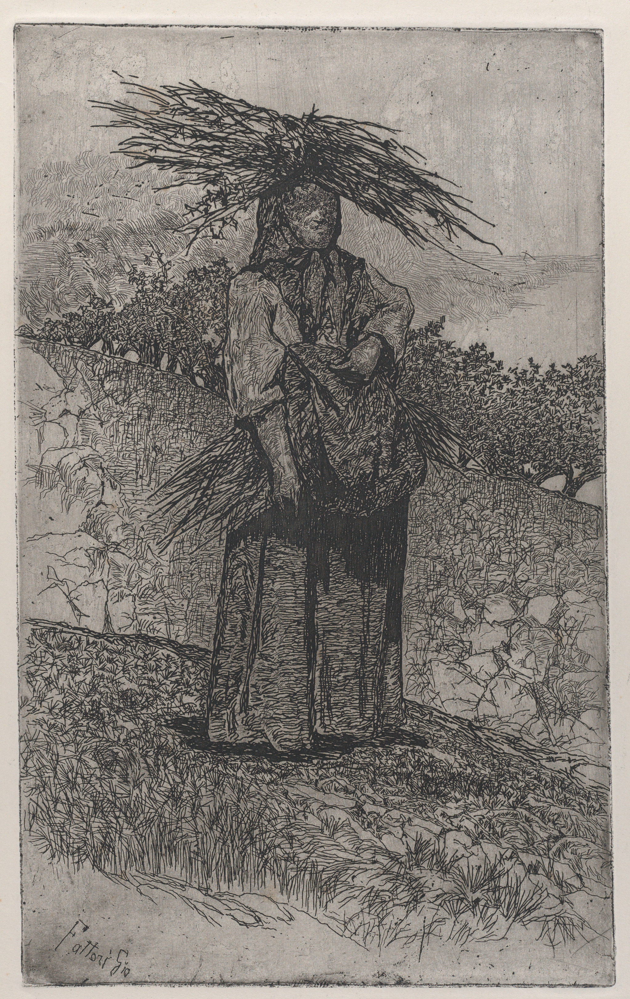

<!DOCTYPE html>
<html>
<head>
<link rel="stylesheet" href="siteStyle_centrelink.css">
</head>
<body>
    <div id="container">
        
        <div id="flex">
            <aside id="leftSidebar" style="margin-left: 10px;">

            <p>I've never had a job.</p>
            <p>That was pretty unusual.</p>
            <p>But basically, when I graduated, I couldn't find anything. And I guess it used to be that you could go to like, a restaurant or something, and get at least a wage. But it became a thing, in the last few years, that restaurants didn't really exist in the same way.</p>
            <p>I think it's hard when you're living through something, to be able to identify that thing as a transformation, especially at a social level.</p>
            <p>I was living through the moment in time when people started disappearing, and at the time, it didn't feel that way. It felt like a weird week, or a weird summer, or a weird year. I felt that surely I'd be able to make plans with someone soon, or run into someone.</p>
            <p>I felt that, surely, someone would reopen one of the restaurants that had been boarded up, and I would be able to get a job somewhere.</p>
            <p>Anyway, this is a beautiful etching of a peasant woman gathering sticks.</p>
            
            <p>Title: Peasant woman gathering sticks</p>
            <p>Artist: Giovanni Fattori (Italian, Livorno 1825–1908 Florence)</p>
            <p>Date: 1884–1908</p>
            <p>Medium: Etching</p>
            <p>Dimensions: Plate: 13 11/16 × 8 7/16 in. (34.8 × 21.5 cm)</p>
            <p>Sheet (Trimmed): 21 9/16 × 14 11/16 in. (54.7 × 37.3 cm)</p>
            <p>Classification: Prints</p>
            <p>Credit Line: Harris Brisbane Dick Fund, 1946</p>
            <p>Object Number: 46.147.13</p>
            <p>Curatorial Department: Drawings and Prints</p>

            <a href="organics.html"><p>I long to be touched.</p></a>
            </aside>  
            <main>
            
            
            
        
            </main>
  

</body>
</html>